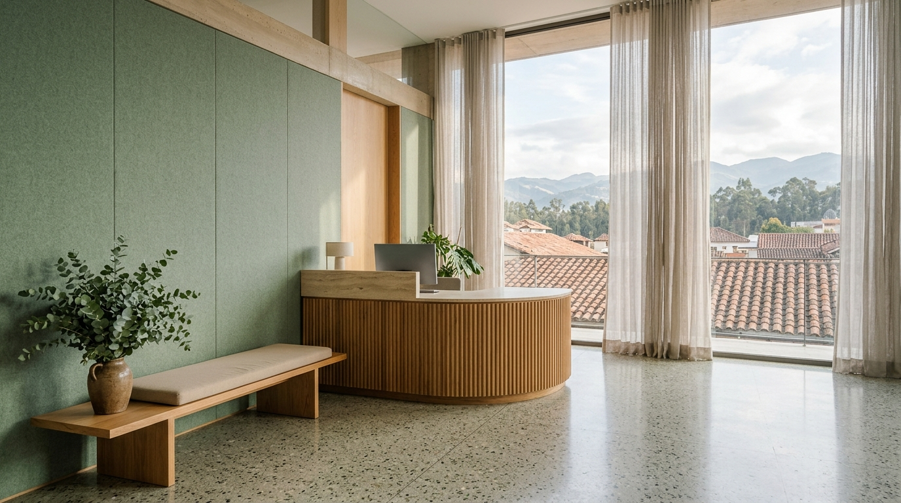

Pautas y duración estimada
Cuenca, Ecuador · Consulta ambulatoria de ejemplo
Información clínica ordenada, horarios visibles y atención sin apuros.
Centro Médico Tomebamba es un consultorio ficticio diseñado por AV·STUDIO para demostrar cómo una institución de salud presenta especialidades, horarios en formato 24h y solicitud de contacto con serenidad y rigor informativo.

- Horario general (24h)
- Lun–Vie 08:00–18:00 · Sáb 08:30–12:30
- Áreas de consulta de ejemplo
- Medicina General, Pediatría, Cardiología Preventiva y Nutrición
- Modalidad del sitio
- Demostración sin diagnósticos ni reservas clínicas reales
Filosofía de atención
Comunicar con calma reduce la incertidumbre antes de la consulta.
“Una clínica ordenada comienza mucho antes de abrir la puerta del consultorio: empieza cuando el paciente sabe qué esperar, en qué horario asistir y qué traer consigo.”
-
01
Horarios transparentes en formato 24h
Cada especialidad muestra con claridad sus franjas horarias de atención y la duración referencial de la primera entrevista para organizar la jornada familiar o laboral.
-
02
Indicaciones claras por escrito
Se prioriza la entrega comprensible de pautas preventivas, requisitos previos de exámenes cuando aplican y seguimiento ordenado tras cada valoración.
-
03
Rigor informativo sin promesas engañosas
El contenido evita exageraciones comerciales o afirmaciones terapéuticas garantizadas y se limita a informar servicios ambulatorios de forma ética y verificable.
Cartera de servicios de ejemplo
Especialidades y orientación previa
Selecciona un área para revisar sus horarios referenciales (24h), enfoque de consulta y recomendaciones antes de acudir.
Estructura de atención profesional
Directorio institucional por áreas clínicas
Nota de transparencia: En una implementación real para un centro médico, cada módulo enlaza al profesional titular acreditado, su número de registro sanitario habilitante e idiomas de atención. En esta demostración no se inventan médicos, fotografías personales ni credenciales.
Unidad 01
Medicina General y Preventiva
Bloque reservado para médico de cabecera acreditado, formación de posgrado e idiomas.
08:00 – 18:00
Primera consulta · 30 min estimados
Unidad 02
Pediatría y Control Infantil
Espacio destinado a detallar especialista pediátrico, edades de cobertura y convenios vigentes.
09:00 – 17:30
Atención familiar previa cita
Unidad 03
Cardiología Preventiva
Espacio configurable para cardiólogo habilitado, requisitos de electrocardiograma y horarios vespertinos.
14:00 – 19:00
Mar, Jue y Vie · Control metabólico
Unidad 04
Nutrición Clínica
Espacio reservado para profesional en nutrición, modalidad presencial en Cuenca o teleorientación regulada.
08:30 – 16:30
Valoración inicial · 45 min
Recorrido informativo del usuario
Cómo funciona la experiencia digital del consultorio
Revisión de especialidad y preparación
El visitante consulta qué incluye cada unidad clínica, sus pautas de preparación previa y la duración referencial antes de solicitar contacto.
Selección de franja horaria 24h
Mediante un selector limpio elige especialidad tentativa, fecha y bloque horario en formato 24h sin formularios extensos ni datos clínicos sensibles.
Preparación ordenada hacia WhatsApp
Al validar los campos, el sistema redacta un resumen claro para comprobar el flujo demostrativo hacia WhatsApp. No existe confirmación automática ni historia clínica electrónica.
Ambientes y arquitectura
Espacios pensados para una entrevista tranquila
Fotografías arquitectónicas ilustrativas de ejemplo; no representan instalaciones médicas reales en operación.
Información práctica
Preguntas frecuentes del modelo
Respuestas breves basadas únicamente en los datos informativos de esta demostración comercial.
¿Cuál es el horario general mostrado en el ejemplo?
El centro demostrativo muestra atención de lunes a viernes de 08:00 a 18:00 y sábados de 08:30 a 12:30 en formato de 24 horas. Cada especialidad cuenta además con sus propias franjas dentro de la sección Especialidades.
¿Qué ubicación geográfica se utiliza como referencia en Cuenca?
La referencia urbana de ejemplo corresponde al sector de la Av. 12 de Abril y Fray Vicente Solano en Cuenca, Azuay, Ecuador.
¿Qué duración estimada se indica por consulta?
La ficha de Medicina General y Preventiva indica una duración estimada de 30 minutos y la de Nutrición Clínica contempla 45 minutos para la primera sesión de valoración.
¿El formulario guarda datos médicos o confirma una cita real?
No. Centro Médico Tomebamba es una demostración interactiva de AV·STUDIO: no almacena historias clínicas, no gestiona telemedicina ni agenda turnos médicos reales. Solo valida campos básicos y prepara un mensaje de prueba hacia WhatsApp.
Contacto y agendamiento de ejemplo
Solicita tu cita demostrativa
Completa los campos mínimos para comprobar cómo un paciente enviaría su consulta inicial por WhatsApp con fecha y franja horaria estructuradas.
- Referencia en Cuenca
- Av. 12 de Abril y Fray Vicente Solano
- Horario de ejemplo (24h)
- Lun–Vie 08:00–18:00 · Sáb 08:30–12:30
- Privacidad en la demo
- Sin almacenamiento de historias clínicas ni información médica sensible.